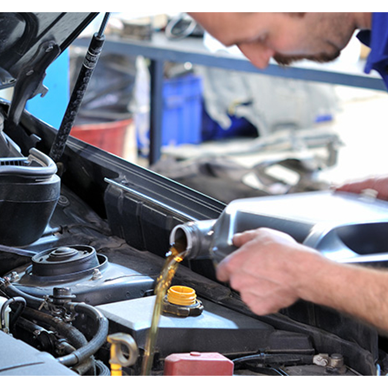
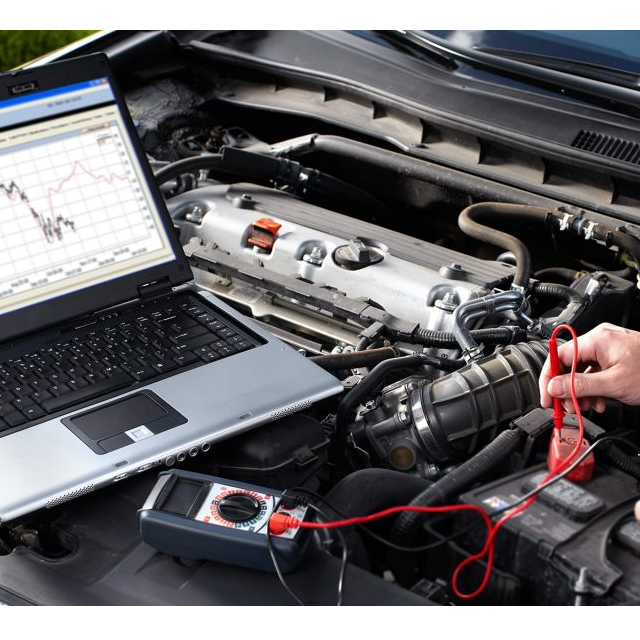
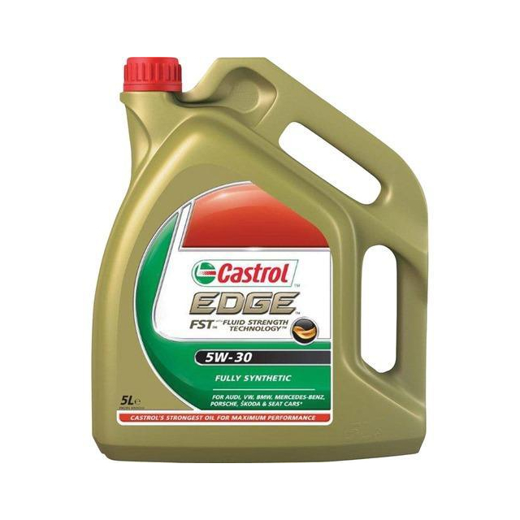

Bienvenidos al equipo
Esta es nuestra pagina web oficial, aqui encontraras informacion relevante para el mantenimiento de tus vehiculos, noticias, consejos y recomendaciones para tus medios de transporte.
Somos una empresa con casi 20 años de experiencia, la empresa fue fundada en el año 2000, en un inicio nos hubicamos en la Carretera aTehuacan #7, Col. San Mateo.
Los ultimas noticias

Tu vehiculo es tu medio de transporte,cuidalo para que no te falle.

Mantenimiento preventivo

Mantenimiento correctivo

Usa el lubricante correcto y